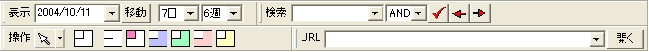

hyCalendar には，表示，検索，URL，操作 の４つのツールバーがあります．
| 表示ツールバー | 日付を入力して移動するための機能と， 表示縮尺（拡大率）の調整機能が付いたツールバーです． |
| 検索ツールバー | 検索キーワードを入力し， そのキーワードを含んだ日付予定を探すことができます． 検索ツールバーについての詳細はこちら． |
| URL ツールバー | 自動ハイパーリンクの対象となった URL の一覧が格納されています．また，任意のURLを入力して開くことができます． |
| 操作 ツールバー | 日付の着色などに使うツールを格納したツールバーです． |
これらのツールバーの表示・非表示は， [表示]メニューから変更したいツールバーの名前を選ぶことで変更することができます． また，終了時の状態を保存する オプションを設定することで，ツールバーの状態を保存しておくことができます．